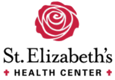

Healthcare/Medical Resources
Here you may find additional resources on medical and dental providers that work with the community and their families to provide quality and affordable healthcare.
El Rio Community Health Center
El Rio is dedicated to providing comprehensive, accessible, affordable, quality, and compassionate care to the community. They serve 1 in 10 people for primary medical and dental care. For more information click here to visit their website - El Rio Community Health Center
St. Elizabeth's Health Center
St. Elizabeth’s Health Center is a faith-based community health center that supports the healthcare needs of the uninsured and underserved in Southern Arizona. They provide high quality healthcare with respect and dignity by responding to individual needs and encouraging health and well-being. For more information click here to visit their website - St. Elizabeth's Health Center
MHC Healthcare
MHC is dedicated to providing provide compassionate, quality, and accessible whole person health care to our community. MHC Healthcare is an innovative, patient focused organization dedicated to providing quality healthcare to all individuals of all ages regardless of insurance status or the ability to pay. For more information click here to visit their website - MHC Healthcare
